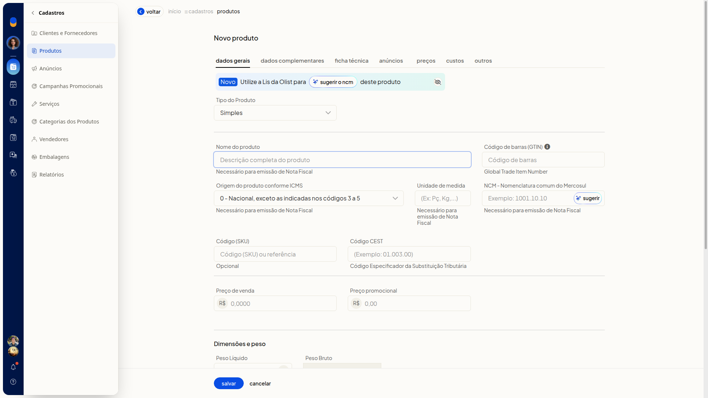
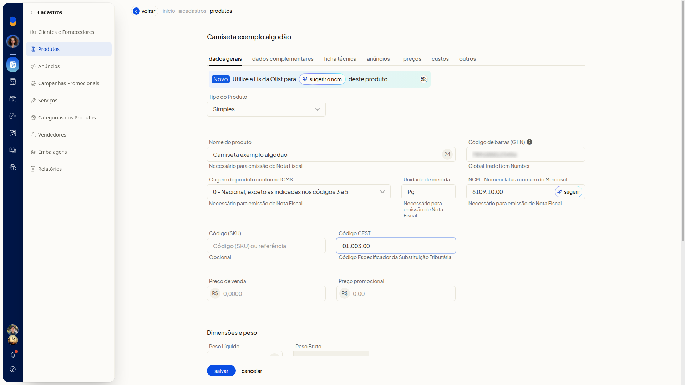
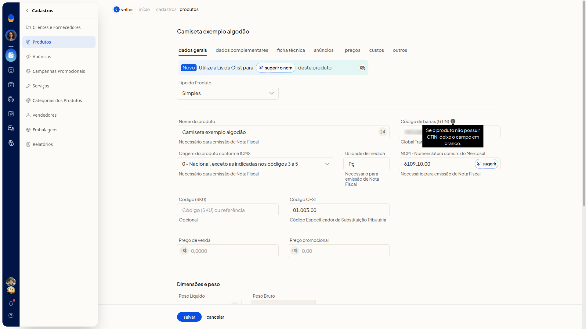

Dados fiscais do produto: NCM, CEST, origem e GTIN
No ERP da Olist, você informa na ficha do produto a origem conforme ICMS, a unidade de medida, o NCM, o CEST e o GTIN. Os campos ficam na aba Dados Gerais.
No campo NCM, você pode pedir à Lis da Olist uma sugestão, conferir o código, a descrição e o percentual e decidir se aplica.
Importante
- Para emitir nota fiscal pelo ERP, preencha Origem do produto conforme ICMS, Unidade de medida e NCM. O texto de ajuda dos campos indica essa necessidade.
- Se o produto não possuir GTIN, deixe Código de barras (GTIN) em branco.
- A sugestão de NCM usa o nome do produto e o GTIN.
Instruções
-
Acesse Cadastros > Produtos.

-
Clique em Incluir produto.

-
Preencha os campos fiscais na aba Dados Gerais. Na ficha, nenhum deles é obrigatório.
- Origem do produto conforme ICMS: selecione a origem na lista. Exemplo: 0 - Nacional, exceto as indicadas nos códigos 3 a 5.
- Unidade de medida: digite a unidade. Exemplos: Pç e Kg.
- NCM: digite o código ou deixe para a sugestão. Exemplo: 6109.10.00.
- Código CEST: digite o Código Especificador da Substituição Tributária. Exemplo: 01.003.00.
- Código de barras (GTIN): digite o código de barras. Se o produto não possuir GTIN, deixe o campo em branco.


-
Informe o nome do produto e clique em sugerir no campo NCM se quiser uma sugestão.
-
Confira o código, a descrição e o percentual no Sugestor de NCM.

-
Clique em aplicar sugestão para usar o código, ou em cancelar para fechar sem aplicar.
-
Clique em salvar para gravar a ficha.